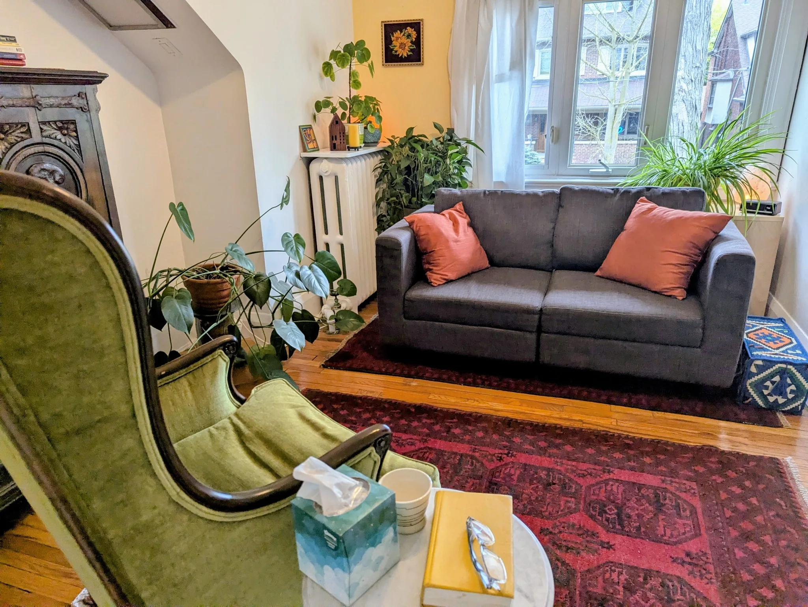

Why Seek Therapy?
People come to therapy for many different reasons. You may be struggling with difficult emotions, relationship challenges, addictive patterns, self-esteem, or the demands of a major life transition. You may feel stuck, disconnected, or simply sense that life could feel more meaningful, creative or fulfilling.
Whatever brings you in, I don’t necessarily see symptoms as problems that need to be eliminated as quickly as possible. Anxiety, depression, anger or withdrawal can sometimes be signals that something important is asking for attention. This may include unresolved pain, unmet needs, or ways of protecting yourself that once made sense but may no longer be helping.
Psychotherapy offers a space to understand these patterns more deeply, reconnect with parts of yourself that may have become difficult to access, and discover new possibilities for how you live, relate and move forward.
How Therapy Works
My approach is relational, embodied and mindfulness-informed, with an emphasis on slowing down, paying attention, and meeting your experience with friendly curiosity.
There is no fixed formula for a session. Different people need different things, and the work develops around what matters most to you. Often, part of the work is building enough support to stay present with feelings or experiences that may have been pushed aside or difficult to face. Sometimes we talk and reflect. At other times, we may stay more closely with an emotion, notice what is happening in your body, explore a recurring pattern, or become curious about what is unfolding between us in the moment.
I see therapy as a collaborative process. My role is not to tell you who you should be, but to listen carefully, help you notice what may be difficult to see on your own, and support your natural capacity for healing, growth and change. I bring warmth, openness, genuine curiosity and a commitment to being fully present with you in the work.
Depending on what is helpful, I may draw on body awareness, mindfulness, imagery, dreamwork, experiential exercises and other approaches.
Ultimately, therapy can help you understand yourself more deeply, loosen patterns that keep you stuck, and create more room for freedom, connection, authenticity and purpose.
